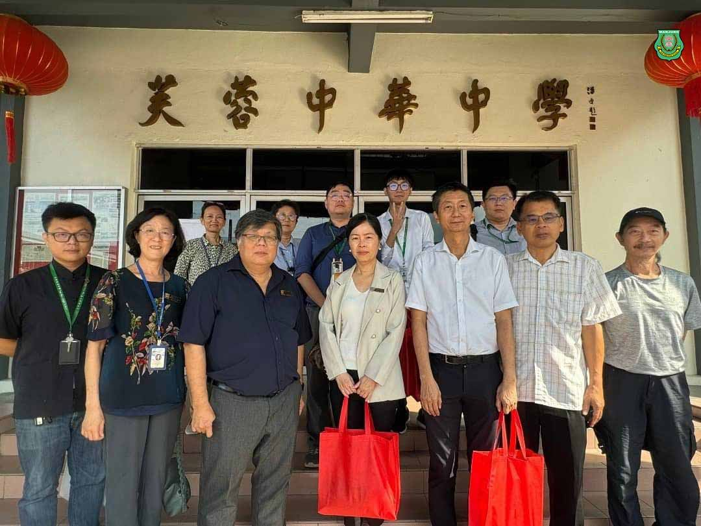
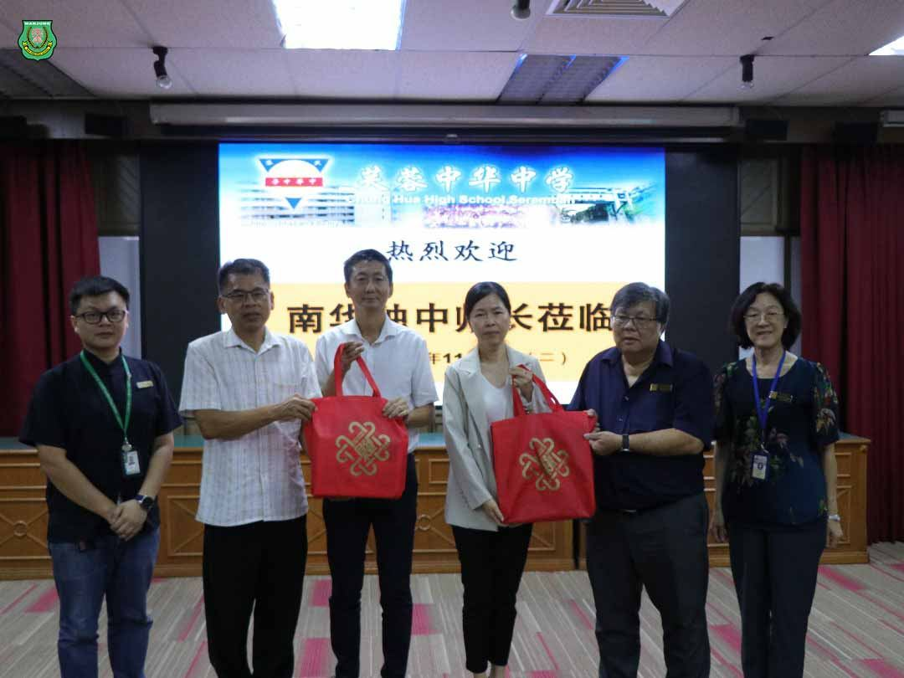
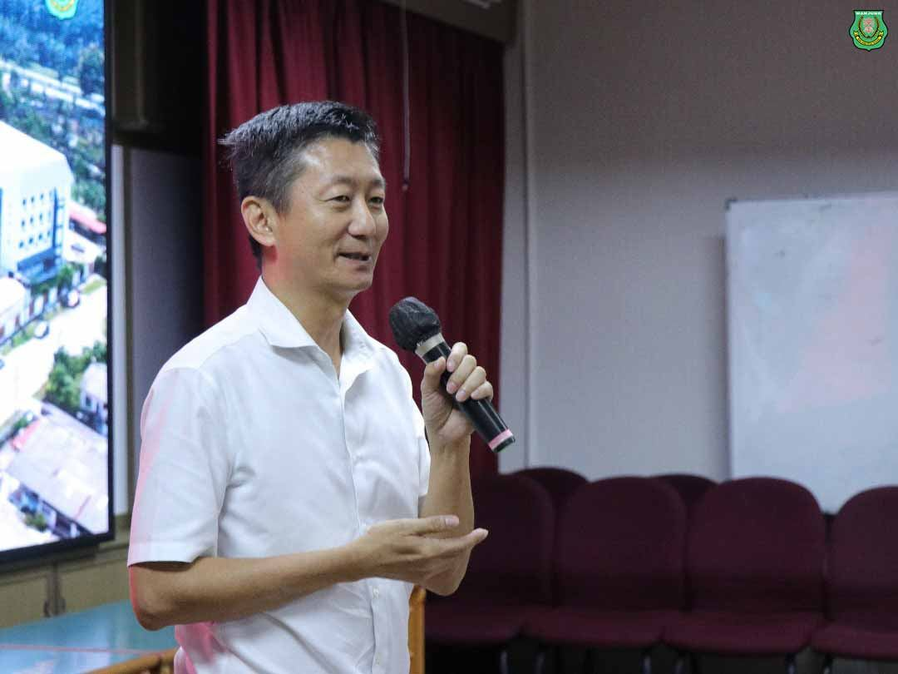
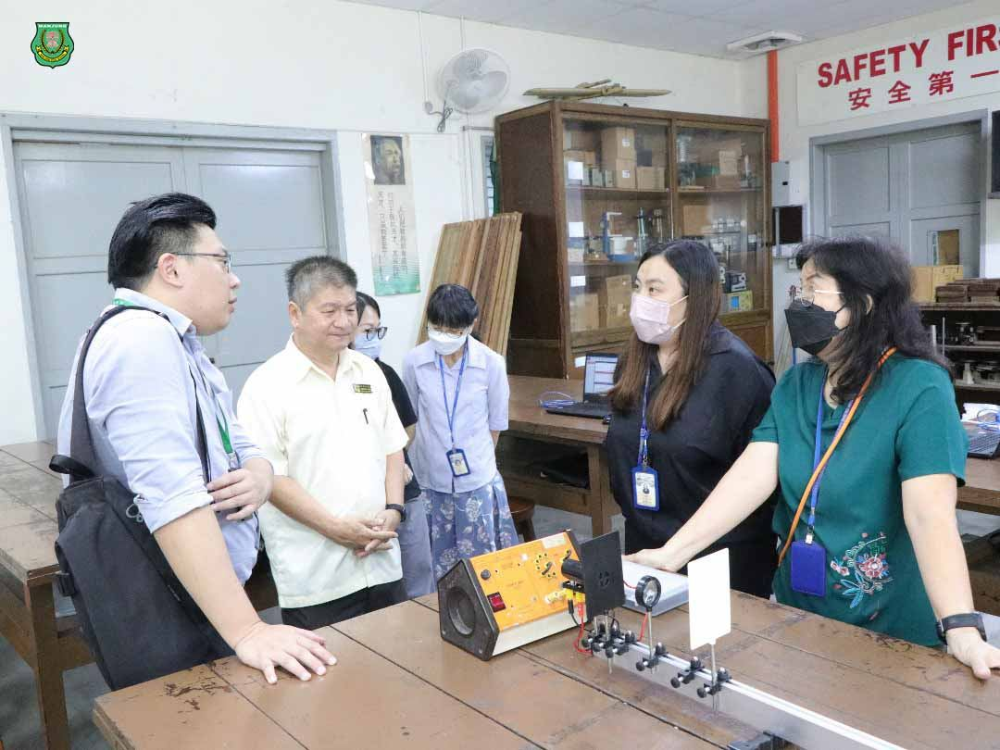
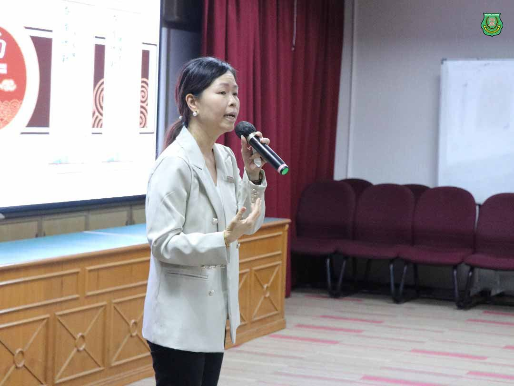
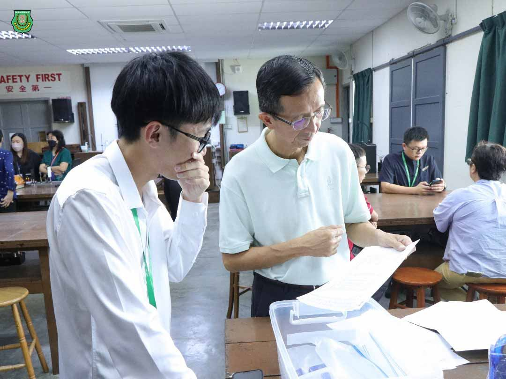
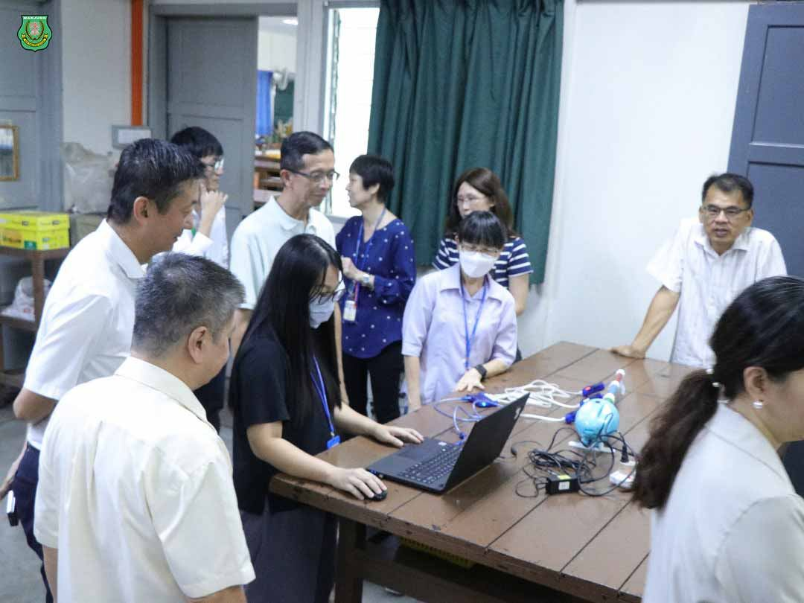
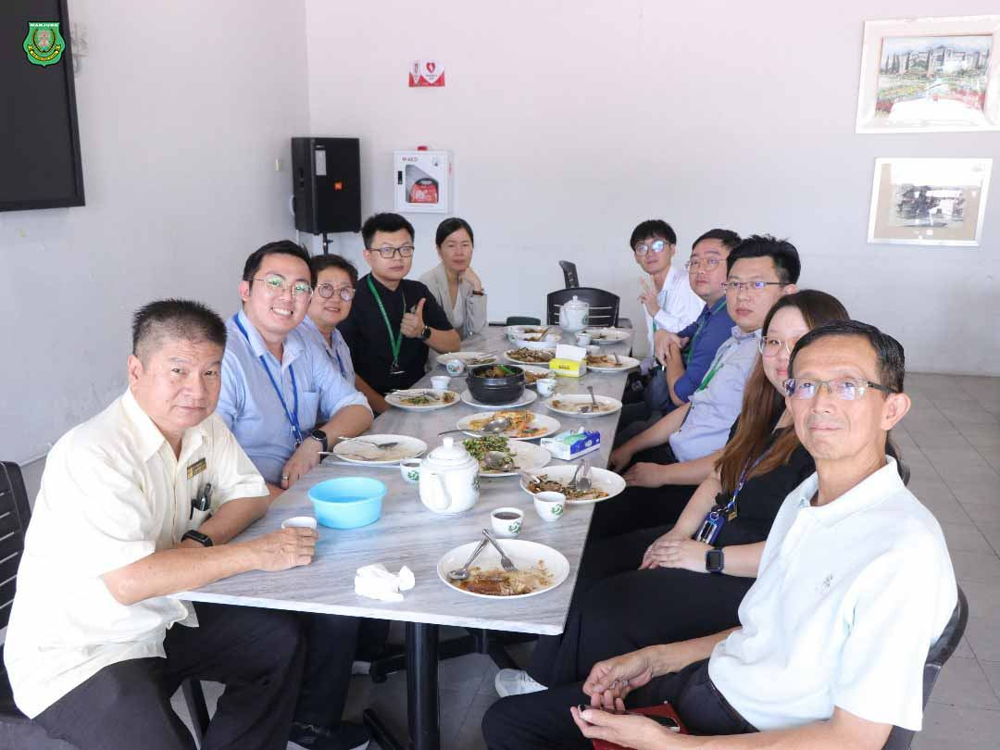

南华独中访芙蓉中华
南华独中访芙蓉中华
针对硬体教学设备与网络管理进行深入交流
本校董事长颜登逸先生及校长陈丽冰博士率领其行政与科主任团队远道参访芙蓉中华中华，旨在参观物理实验室与远距离教学教室、并于教学硬体设备如智能电视与校园网络的管理上进行深入交流与学习。
芙蓉中华中学向来高度重视学校的教育教学质量，不断探索先进的教育理念和教学方法，本校尤其在参观视听室、电脑室、物理室与智能电视后收获颇丰。
芙蓉中华中学校长蔡亲炀博士在致辞中表示，硬体设备的提升本意必须回归到学生的学习成效上，芙中时刻关注学生必须与时并进，与时代接轨，透过顶尖的设备辅助学生的学习。
本校董事长在致辞中强调，芙中的硬体设备与校园网络管理非常完善，各个方面都极具参考经验。校长陈丽冰博士则表示，南华独中借鉴芙中的教学硬体设备与方法，并提出希望能够在未来共商更多的合作机会，让两校师生之间打开交流渠道，建立并巩固两校的密切往来与深厚情谊。







